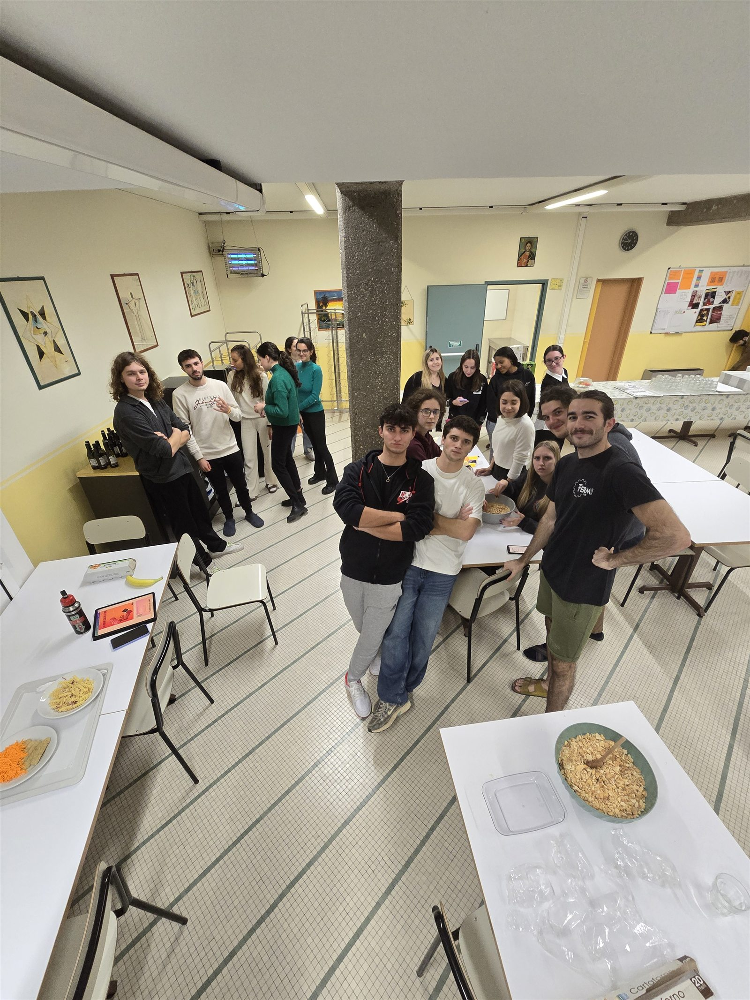

The journey together
Eighteen people in a borrowed common room, a table of ingredients and nothing switched on. Nobody had met before that evening.
Jan 20, 2025
Started in Padova · open to every city
Cuochi senza fuochi (it means cooks without fires) is a group of people who get together to make easy, cheap desserts and cakes, with no oven and no stove. The cake is the excuse. The people you make it with are the point.

Most of these people met for the first time that evening.
who we are
Moving to a new city, you sort out a room and a commute in a few weeks. Finding people takes longer. So we keep it simple: one table, one easy recipe, a bowl each, and whoever turns up. While your hands are busy with biscuits and cream, talking to strangers just happens.
No jury, no score, no “best cake”. We all make the same dessert together, and we all eat it. The only thing that gets judged is how fast the tiramisù disappears.
Joining is free. Recipes are made from a few supermarket basics, so money is never the reason someone stays home.
No oven, no stove, no experience. If you can stir, crush a biscuit or lick a spoon, you are already qualified.
Nobody wins. Everybody eats.
the whole idea, in four words
an evening with us
No form, no fee, nothing to prepare. This is the whole format.
One message on Instagram, TikTok or YouTube. We reply with the place, the time and the dessert of the evening.
Don’t cook and don’t bring a dish. The ingredients and the bowls are already on the table when you arrive.
Someone talks everyone through the recipe. You crush, mix and layer, chatting with whoever is standing next to you.
Into the fridge, onto the plates, gone. You go home with a recipe you can redo without a kitchen, and a few new names in your phone.
what we make
A bowl, a spoon and a fridge: that’s the whole kitchen. Everything is easy enough to make with fifteen people talking at once, and cheap enough to make again at home.
Biscuits, chocolate, butter, sugar. Roll it, chill it, slice it.
The Italian classic, and no-bake by definition.
Looks like the hardest thing on the table. It’s the easiest.
Two ingredients and a lot of whisking, shared out.
why come along
There are lots of good ways to meet people. This one is just very easy to say yes to, whoever you are and however long you’ve been here.
from the table
Photos and short notes from the last few evenings. This is what you’d be walking into.
All it takes is a table, a fridge and a few curious people. We’ll share our recipes and how we run an evening, so you can host the first one wherever you live.
see it first
We film and photograph the sessions. Have a look, and if you like what you see, a message on any of these is also a perfectly good way to sign up.
You don’t need to know anyone, cook anything or bring anything. Most people come on their own the first time.